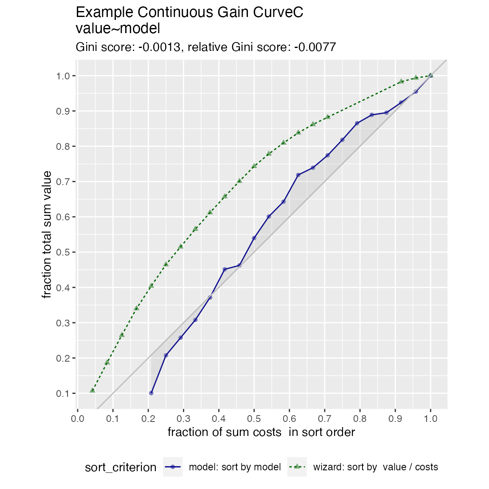
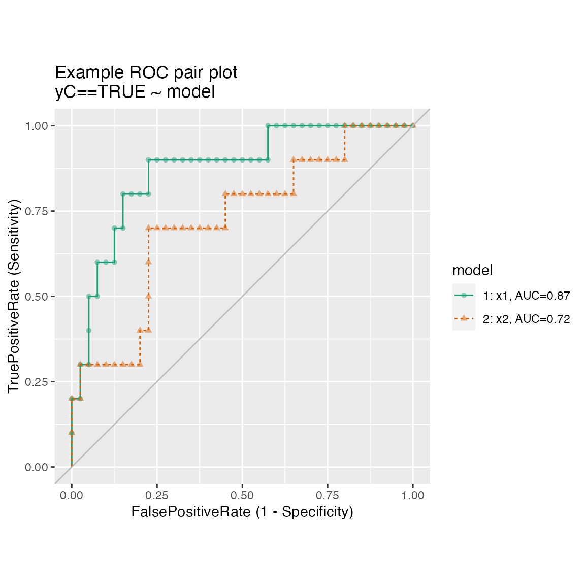
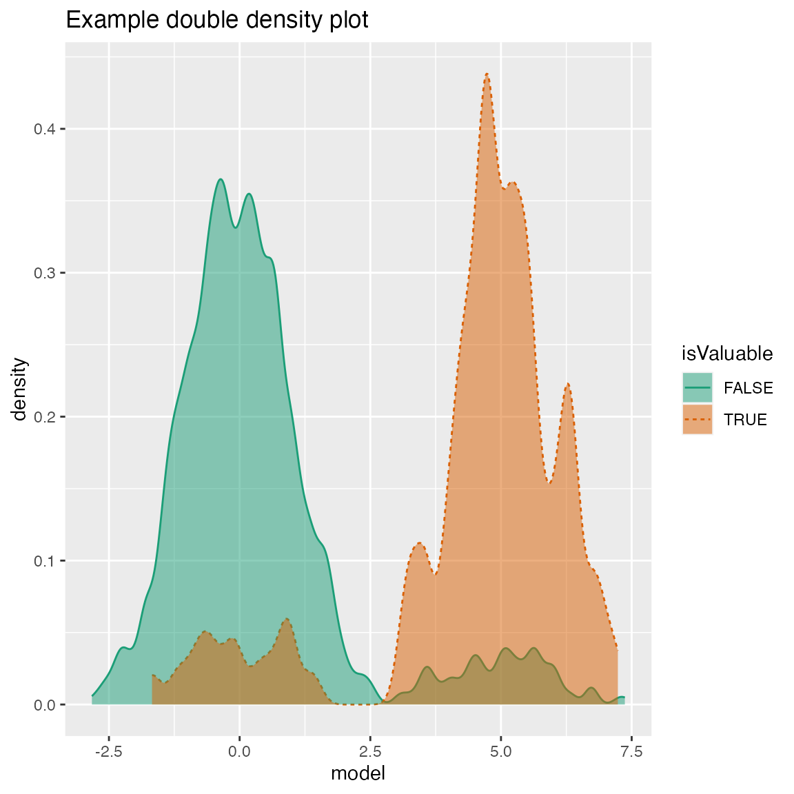
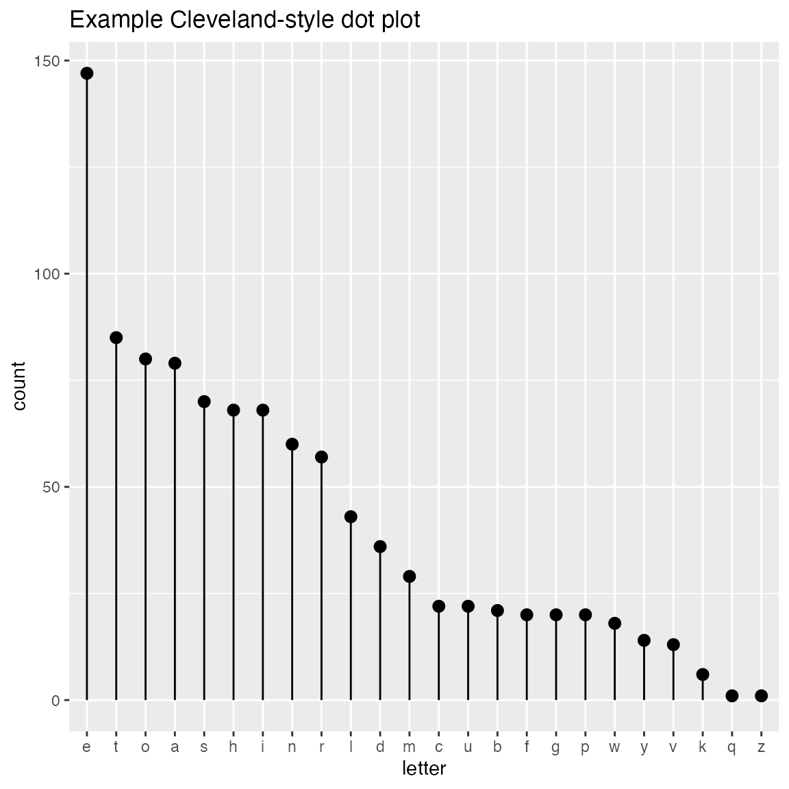
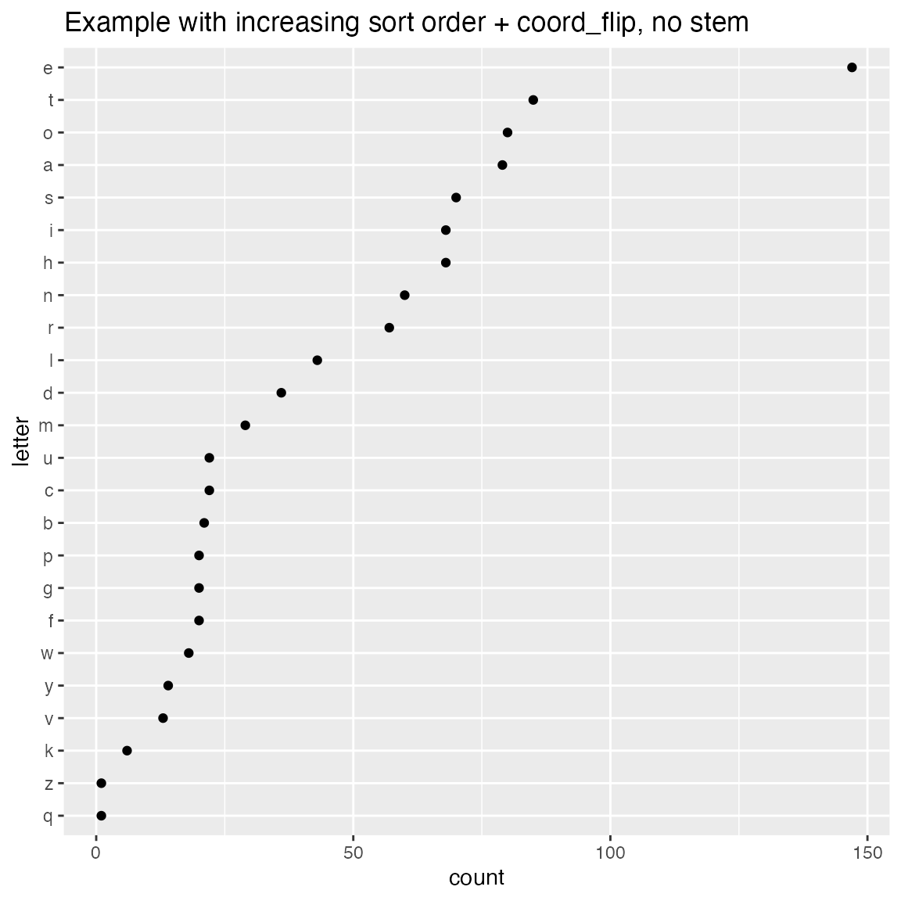
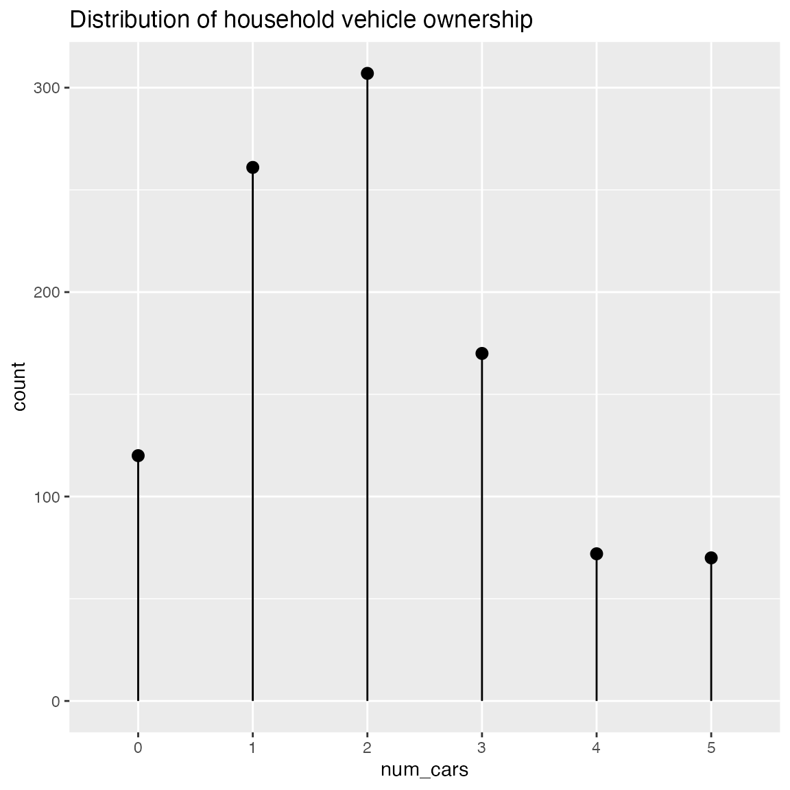

Example WVPlots
Win-Vector LLC
2018-05-17
Source:vignettes/WVPlots_examples.Rmd
WVPlots_examples.RmdSome example data science plots in R using ggplot2. See https://github.com/WinVector/WVPlots for code/details.
set.seed(34903490)
x = rnorm(50)
y = 0.5*x^2 + 2*x + rnorm(length(x))
frm = data.frame(x=x,y=y,yC=y>=as.numeric(quantile(y,probs=0.8)))
frm$absY <- abs(frm$y)
frm$posY = frm$y > 0Scatterplots
Scatterplot with smoothing line through points.
WVPlots::ScatterHist(frm, "x", "y", title="Example Fit")## `geom_smooth()` using method = 'loess'
## `geom_smooth()` using method = 'loess'
Scatterplot with best linear fit through points. Reports the R-squared and significance of the linear fit.
WVPlots::ScatterHist(frm, "x", "y", smoothmethod="lm",
title="Example Linear Fit", annot_size=2)Scatterplot compared to the line x = y. Reports the square of the correlation between x and y (R-squared) and its significance.
WVPlots::ScatterHist(frm, "x", "y", smoothmethod="identity",
title="Example Relation Plot", annot_size=2)
Scatterplot of (x, y) color-coded by category/group, with marginal distributions of x and y conditioned on group.
set.seed(34903490)
fmScatterHistC = data.frame(x=rnorm(50),y=rnorm(50))
fmScatterHistC$cat <- fmScatterHistC$x+fmScatterHistC$y>0
WVPlots::ScatterHistC(fmScatterHistC, "x", "y", "cat", title="Example Conditional Distribution")
Scatterplot of (x, y) color-coded by discretized z. The continuous variable z is binned into three groups, and then plotted as by ScatterHistC
set.seed(34903490)
frmScatterHistN = data.frame(x=rnorm(50),y=rnorm(50))
frmScatterHistN$z <- frmScatterHistN$x+frmScatterHistN$y
WVPlots::ScatterHistN(frmScatterHistN, "x", "y", "z", title="Example Joint Distribution")
Plot the relationship y as a function of x with a smoothing curve that estimates \(E[y | x]\). If y is a 0/1 variable as below (binary classification, where 1 is the target class), then the smoothing curve estimates \(P(y | x)\). Since \(y \in \{0,1\}\) with \(y\) intended to be monotone in \(x\) is the most common use of this graph, BinaryYScatterPlot uses a glm smoother by default (use_glm=TRUE, this is essentially Platt scaling), as the best estimate of \(P(y | x)\).
WVPlots::BinaryYScatterPlot(frm, "x", "posY", use_glm=FALSE,
title="Example 'Probability of Y' Plot (ggplot2 smoothing)")## `geom_smooth()` using method = 'loess'
WVPlots::BinaryYScatterPlot(frm, "x", "posY", use_glm=TRUE,
title="Example 'Probability of Y' Plot (GLM smoothing)")
Gain Curves
set.seed(34903490)
y = abs(rnorm(20)) + 0.1
x = abs(y + 0.5*rnorm(20))
frm = data.frame(model=x, value=y)
frm$costs=1
frm$costs[1]=5
frm$rate = with(frm, value/costs)
frm$isValuable = (frm$value >= as.numeric(quantile(frm$value, probs=0.8)))Basic curve: each item “costs” the same. The wizard sorts by true value, the x axis sorts by the model, and plots the fraction of the total population.
WVPlots::GainCurvePlot(frm, "model", "value", title="Example Continuous Gain Curve")
We can annotate a point of the model at a specific x value
gainx = 0.10 # get the top 10% most valuable points as sorted by the model
# make a function to calculate the label for the annotated point
labelfun = function(gx, gy) {
pctx = gx*100
pcty = gy*100
paste("The top ", pctx, "% most valuable points by the model\n",
"are ", pcty, "% of total actual value", sep='')
}
WVPlots::GainCurvePlotWithNotation(frm, "model", "value",
title="Example Gain Curve with annotation",
gainx=gainx,labelfun=labelfun) 
When the x values have different costs, take that into account in the gain curve. The wizard now sorts by value/cost, and the x axis is sorted by the model, but plots the fraction of total cost, rather than total count.
WVPlots::GainCurvePlotC(frm, "model", "costs", "value", title="Example Continuous Gain CurveC")
ROC Plots
WVPlots::ROCPlot(frm, "model", "isValuable", TRUE, title="Example ROC plot")
set.seed(34903490)
x1 = rnorm(50)
x2 = rnorm(length(x1))
y = 0.2*x2^2 + 0.5*x2 + x1 + rnorm(length(x1))
frmP = data.frame(x1=x1,x2=x2,yC=y>=as.numeric(quantile(y,probs=0.8)))
# WVPlots::ROCPlot(frmP, "x1", "yC", TRUE, title="Example ROC plot")
# WVPlots::ROCPlot(frmP, "x2", "yC", TRUE, title="Example ROC plot")
WVPlots::ROCPlotPair(frmP, "x1", "x2", "yC", TRUE, title="Example ROC pair plot")
Precision-Recall Plot
WVPlots::PRPlot(frm, "model", "isValuable", TRUE, title="Example Precision-Recall plot")
Double Density Plot
WVPlots::DoubleDensityPlot(frm, "model", "isValuable", title="Example double density plot")
Double Histogram Plot
WVPlots::DoubleHistogramPlot(frm, "model", "isValuable", title="Example double histogram plot")
Cleveland Style Dotplots
set.seed(34903490)
# discrete variable: letters of the alphabet
# frequencies of letters in English
# source: http://en.algoritmy.net/article/40379/Letter-frequency-English
letterFreqs = c(8.167, 1.492, 2.782, 4.253, 12.702, 2.228,
2.015, 6.094, 6.966, 0.153, 0.772, 4.025, 2.406, 6.749, 7.507, 1.929,
0.095, 5.987, 6.327, 9.056, 2.758, 0.978, 2.360, 0.150, 1.974, 0.074)
letterFreqs = letterFreqs/100
letterFrame = data.frame(letter = letters, freq=letterFreqs)
# now let's generate letters according to their letter frequencies
N = 1000
randomDraws = data.frame(draw=1:N, letter=sample(letterFrame$letter, size=N, replace=TRUE, prob=letterFrame$freq))
WVPlots::ClevelandDotPlot(randomDraws, "letter", title = "Example Cleveland-style dot plot")WVPlots::ClevelandDotPlot(randomDraws, "letter", limit_n = 10, title = "Top 10 most frequent letters")
WVPlots::ClevelandDotPlot(randomDraws, "letter", sort=0, title="Example Cleveland-style dot plot, unsorted")
WVPlots::ClevelandDotPlot(randomDraws, "letter", sort=1, stem=FALSE, title="Example with increasing sort order + coord_flip, no stem") + ggplot2::coord_flip()
Shadow Plots
Plot a bar chart of row counts conditioned on the categorical variable condvar, faceted on a second categorical variable, refinevar. Each faceted plot also shows a “shadow plot” of the totals conditioned on condvar alone.
This plot enables comparisons of subpopulation totals across both condvar and refinevar simultaneously.
set.seed(354534)
N = 100
# rough proportions of eye colors
eprobs = c(0.37, 0.36, 0.16, 0.11)
eye_color = sample(c("Brown", "Blue", "Hazel", "Green"), size = N, replace = TRUE, prob = eprobs)
sex = sample(c("Male", "Female"), size = N, replace = TRUE)
# A data frame of eye color by sex
dframe = data.frame(eye_color = eye_color, sex = sex)
WVPlots::ShadowPlot(dframe, "eye_color", "sex", title = "Shadow plot of eye colors by sex")
ScatterBox Plots
classes = c("a", "b", "c")
means = c(2, 4, 3)
names(means) = classes
label = sample(classes, size=1000, replace=TRUE)
meas = means[label] + rnorm(1000)
frm2 = data.frame(label=label,
meas = meas)
WVPlots::ScatterBoxPlot(frm2, "label", "meas", pt_alpha=0.2, title="Example Scatter/Box plot")
WVPlots::ScatterBoxPlotH(frm2, "meas", "label", pt_alpha=0.2, title="Example Scatter/Box plot")
Discrete Distribution Plot
frmx = data.frame(x = rbinom(1000, 20, 0.5))
WVPlots::DiscreteDistribution(frmx, "x","Discrete example")
Distribution and Count Plot
set.seed(52523)
d <- data.frame(wt=100*rnorm(100))
WVPlots::PlotDistCountNormal(d,'wt','example')
WVPlots::PlotDistDensityNormal(d,'wt','example')
Smoothed Scatterplots
y = c(1,2,3,4,5,10,15,18,20,25)
x = seq_len(length(y))
df = data.frame(x=x,y=y)
WVPlots::ConditionalSmoothedScatterPlot(df, "x", "y", NULL, title="centered smooth, one group")
WVPlots::ConditionalSmoothedScatterPlot(df, "x", "y", NULL, title="left smooth, one group", align="left")
WVPlots::ConditionalSmoothedScatterPlot(df, "x", "y", NULL, title="right smooth, one group", align="right")n = length(x)
df = rbind(data.frame(x=x, y=y+rnorm(n), gp="times 1"),
data.frame(x=x, y=0.5*y + rnorm(n), gp="times 1/2"),
data.frame(x=x, y=2*y + rnorm(n), gp="times 2"))
WVPlots::ConditionalSmoothedScatterPlot(df, "x", "y", "gp", title="centered smooth, multigroup")
WVPlots::ConditionalSmoothedScatterPlot(df, "x", "y", "gp", title="left smooth, multigroup", align="left")
WVPlots::ConditionalSmoothedScatterPlot(df, "x", "y", "gp", title="right smooth, multigroup", align="right")
Density Plot with Shaded Tail
set.seed(52523)
d = data.frame(meas=rnorm(100))
threshold = -1.5
WVPlots::ShadedDensity(d, "meas", threshold,
title="Example shaded density plot, left tail")
WVPlots::ShadedDensity(d, "meas", -threshold, tail="right",
title="Example shaded density plot, right tail")